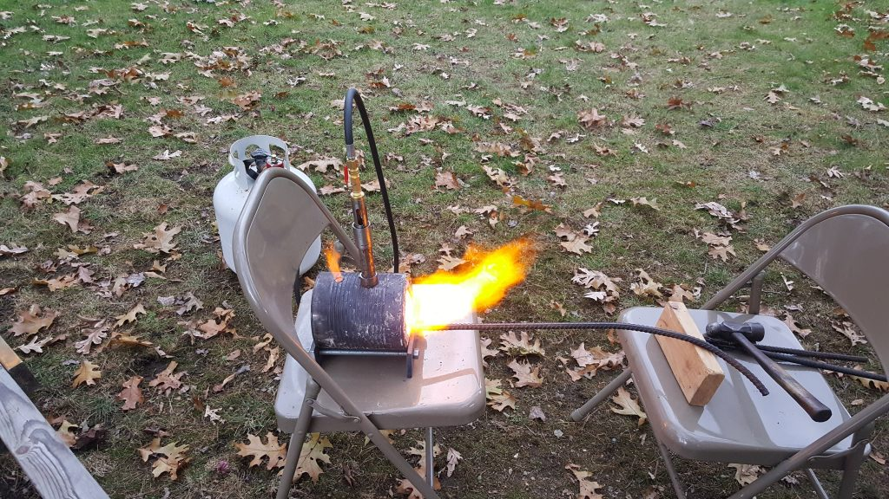
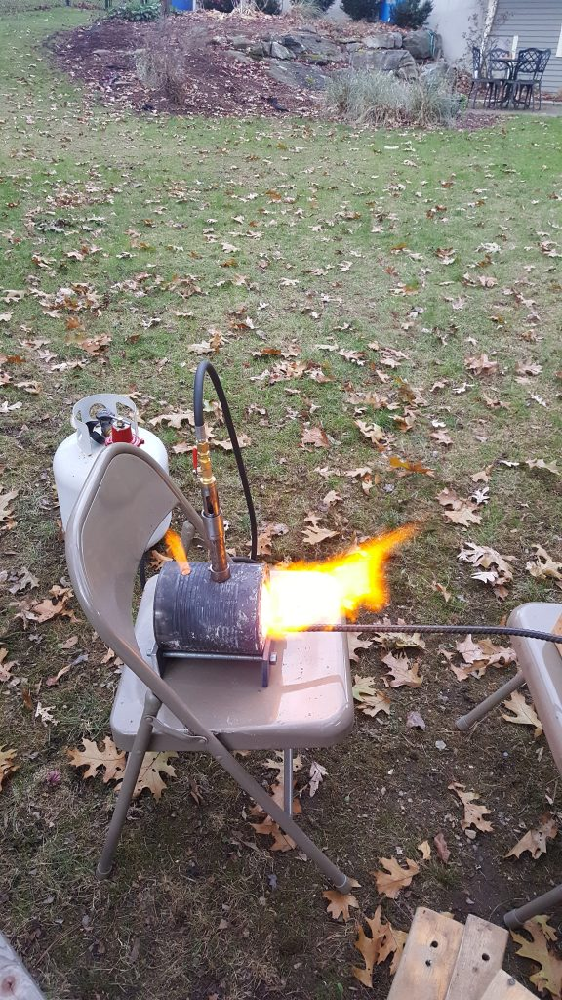
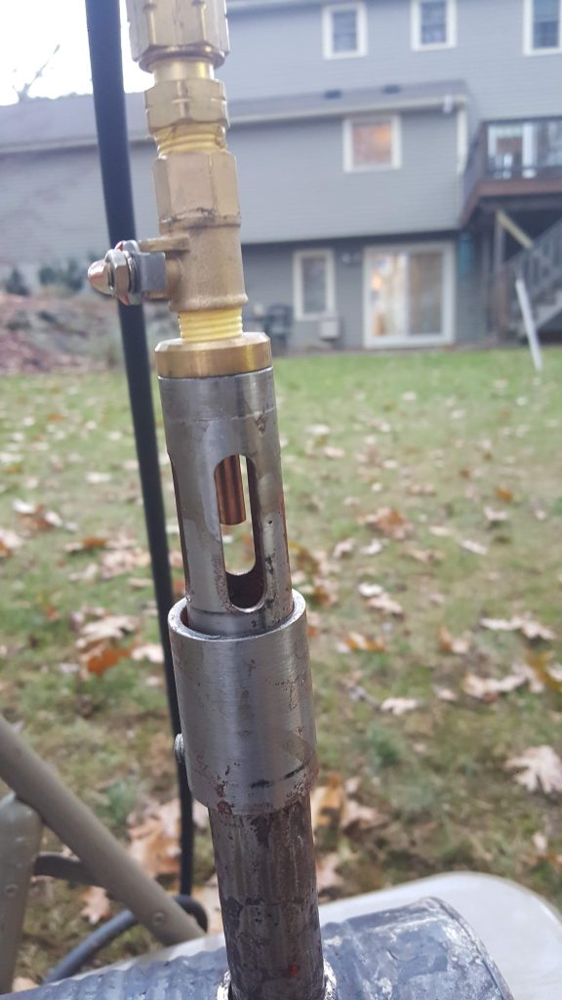
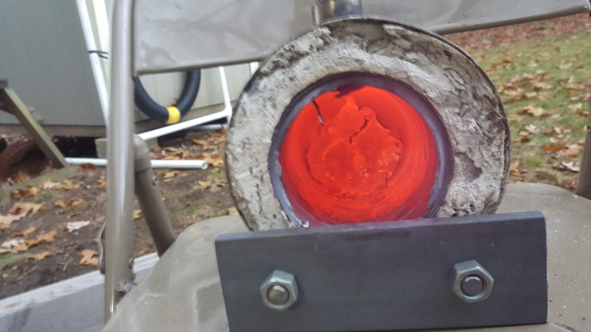
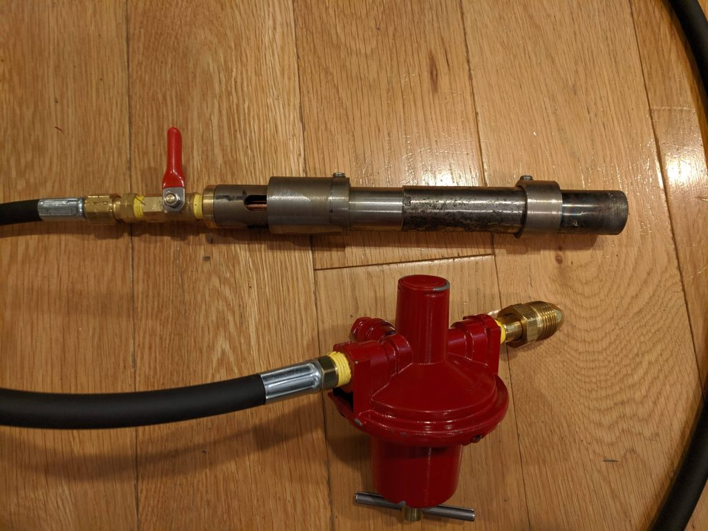

Propane Gas Forge ~ 2019

The need for this forge was to replace my existing charcoal forge. The charcoal forge worked very well, but struggled with setup time, clinkers, soot, and fire risk. This propane (LP Gas) design offered increased efficiency in burning the fuel. The result was a system that would reach a consistent operating temperature faster with less time and fuel consumption. Additionally, removal of the comparably dirty charcoal fuel allowed for the operating environment to be considerably safer.
By working with my fluid dynamics professors I was able to identify key areas to focus design. The four most important factors in this design are as follows:
- Variable orifice size: The orifice size dictates the volumetric flow rate (Q) as well as the exit velocity of the gas. To easily achieve orifice sizes smaller than the typical drill index, MIG nozzles were used as they are an inexpensive off-the-shelf component that allows easy change in orifice size.
- Adjustable air inlet: The equation for propane combustion requires a large amount of air (oxygen) per gram of fuel. In a naturally aspirated burner such as my design, I am reliant on the entrainment of air to be a sufficient ratio for efficient combustion. Without a complete model of the system and unknown propane exit velocity, I gave the option to fine-tune the opening size with an adjustable air inlet.
- Burner length: While initially laminar flow seemed preferable in the burner tube, I settled on turbulent flow performing better. By having sufficient burner length I could essentially have a mixing chamber that allows the swirling air and propane mixture to homogenize before exit.
- Pressure regulator: An LP-rated pressure regulator allows the high pressure tank to be regulated down to a pressure more acceptable for efficient combustion. This regulation combined with the other adjustments allows the forge to operate at lower fuel consumption for operations that do not require maximum output.



